Generated 2026-07-09 06:36 · 27 medium tasks · 9 feasible in this session
The previous documentation pass fixed stale README/FEATURES/CONTRIBUTING counts and removed justfile ghosts, but left the active engineering TODOs untouched. This plan ranks every open TODO by customer value, impact, and effort. The 1% highest-leverage tasks are code-only fixes that prevent silent failures or expose invisible resource hogs. The 75% tail is blocked on deploy, hardware, or human steps and is documented separately.
| ID | Task | Prio | Impact | Effort | Min | Status |
|---|---|---|---|---|---|---|
| T01 |
Fix post-deploy-check.sh path in deploy.sh Use nix run .#post-deploy-check instead of $(dirname $0)/post-deploy-check.sh |
P1 | High | Low | 10 | Feasible |
| T02 |
Add GPUActive textfile collector Expose /proc/meminfo GPUActive/GPUReclaim via node_exporter textfile |
P3 | High | Low | 30 | Feasible |
| T03 |
Reduce TTM page_pool_size in boot.nix Drop from 112 GiB to ~32 GiB; requires reboot |
P3 | High | Low | 20 | Feasible |
| T04 |
Pin dnsblockd flake input to v0.2.0 Stop tracking master, prevent drift |
P0-DNS | Medium | Low | 10 | Feasible |
| T05 |
Investigate project-meta silent build failure Check if binary is empty or missing from systemPackages |
P0 | High | Medium | 30 | Feasible |
| T06 |
Remove photomap disabled service from config Podman permission issues, niche feature |
P6 | Low | Low | 15 | Feasible |
| T07 |
Add DNS migration assertions to dns-blocker.nix require allowedNetworks and localZones |
P0-DNS | High | Medium | 30 | Feasible |
| T08 |
Add typed NixOS options for one service Improve type safety, e.g. disk-monitor or nvme-health-monitor |
P6 | Medium | Medium | 45 | Feasible |
| T09 |
Generate dnsblockd YAML with dns_enabled Local records, zones, forwarders, ACLs, IPv6 |
P0-DNS | High | High | 60 | Feasible |
| T10 |
Move unbound to :5353 backup Keep identical config on backup port |
P0-DNS | High | Medium | 45 | Feasible |
| T11 |
Update dns-blocker-config.nix for dnsblockd primary Migrate 13 local-data entries |
P0-DNS | High | Medium | 45 | Feasible |
| T12 |
Update service dependencies from unbound to dnsblockd 6+ services + generic DNS target |
P0-DNS | Medium | Medium | 30 | Feasible |
| T13 |
Rewrite VRRP health check for dnsblockd chk_unbound -> DNS query on :53 |
P0-DNS | Medium | Medium | 30 | Feasible |
| T14 |
Add Monitor365 agent→server auth Prevent LAN POST spam |
P6 | High | High | 60 | Feasible |
| T15 |
Split signoz.nix into sub-modules 705L -> collector, clickhouse, query, alerts |
P6 | Medium | High | 90 | Feasible |
| T16 |
Fix aw-watcher-utilization postPatch poetry -> poetry-core |
P5 | Low | Low | 30 | Feasible |
| T17 |
Add library-policy / mr-sync go.sum fixes Upstream go.sum corrections |
P5 | Low | Low | 30 | Feasible |
| T18 |
Fix taskwarrior3 build flags SYSTEM_CORROSION + ENABLE_TLS_NATIVE_ROOT defaults |
P5 | Low | Low | 30 | Feasible |
| T19 |
Add Kitty GC resilience patch nixpkgs wrapper fix |
P5 | Low | Low | 30 | Feasible |
| T20 |
Add KeePassXC Chromium manifests Trivial manifest generation |
P5 | Low | Low | 30 | Feasible |
| T21 |
Fix ActivityWatch Wayland watcher deps graphical-session.target |
P5 | Low | Low | 30 | Feasible |
| T22 |
Add ActivityWatch theme HM option Remove curl oneshot workaround |
P5 | Low | Low | 30 | Feasible |
| T23 |
Fix Darwin user definition requirement Track HM issue #6036 |
P5 | Low | Low | 30 | Feasible |
| T24 |
BTRFS /data subvolume migration config Requires USB rescue + downtime |
P3 | High | High | 60 | Blocked |
| T25 |
Deploy discard=async fix + reboot Requires nix run .#deploy + reboot |
P0 | Critical | Low | 30 | Blocked |
| T26 |
Off-site backup setup Requires Hetzner StorageBox + BorgBackup |
P0 | Critical | High | 120 | Blocked |
| T27 |
BTRFS scrub + SMART check Requires sudo + long-running |
P0 | Critical | Medium | 60 | Blocked |
| Step | Task | Why | Verify |
|---|---|---|---|
| 1 | Fix post-deploy-check.sh path in deploy.sh | Silent smoke-test failure | grep for nix run .#post-deploy-check |
| 2 | Pin dnsblockd flake input to v0.2.0 | Prevent master drift | nix flake metadata |
| 3 | Investigate project-meta silent build | Missing binary | nix build .#project-meta |
| 4 | Add GPUActive textfile collector | #1 invisible RAM consumer | nix flake check + eval |
| 5 | Reduce TTM page_pool_size | Chronic memory pressure | nix flake check |
| 6 | Remove photomap from configuration | Reduce dead config | nix flake check |
| 7 | Add DNS migration assertions | Prevent open resolver | nix flake check |
| 8 | Fix aw-watcher-utilization postPatch | Upstream contribution | nix build .#aw-watcher-utilization |
| 9 | Add typed NixOS options for disk-monitor | Type safety | nix flake check |
